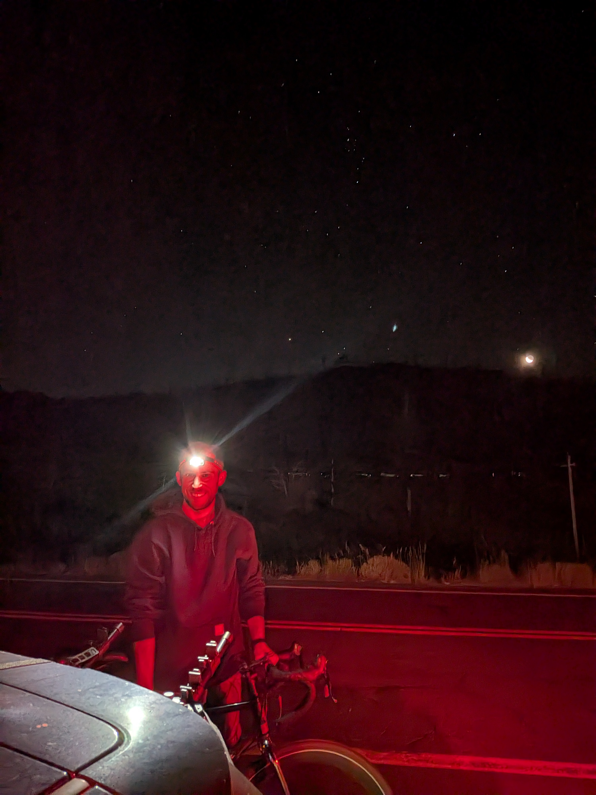
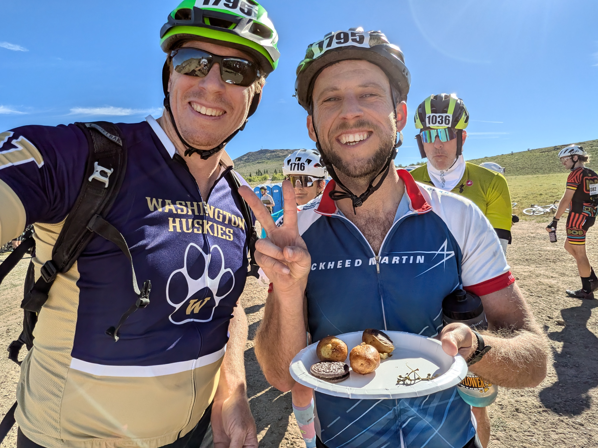
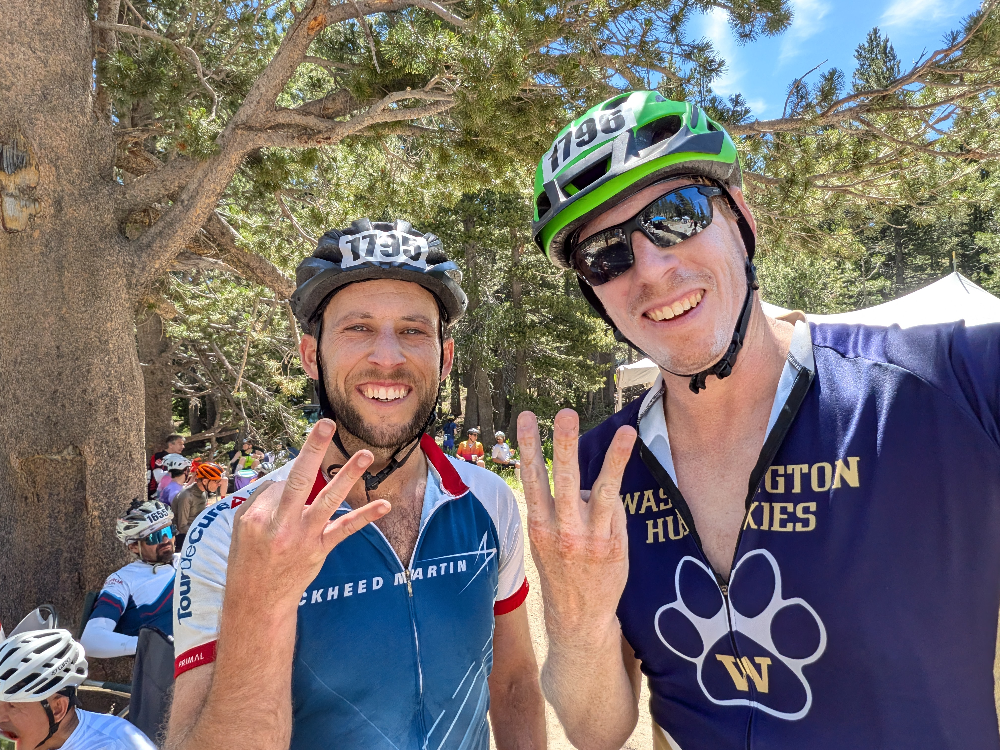
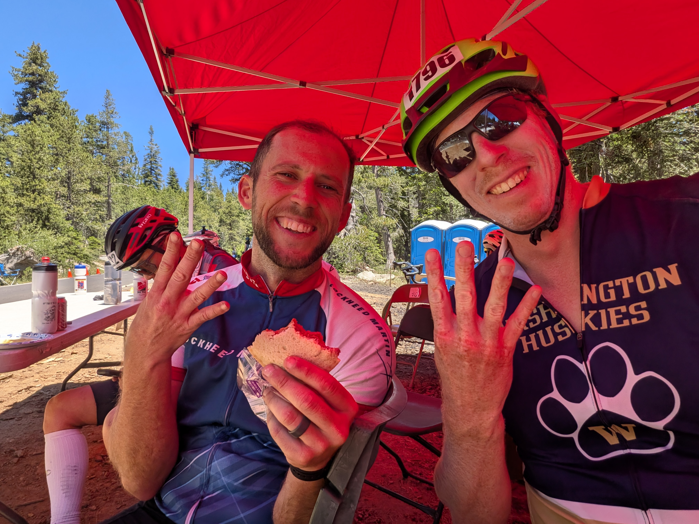
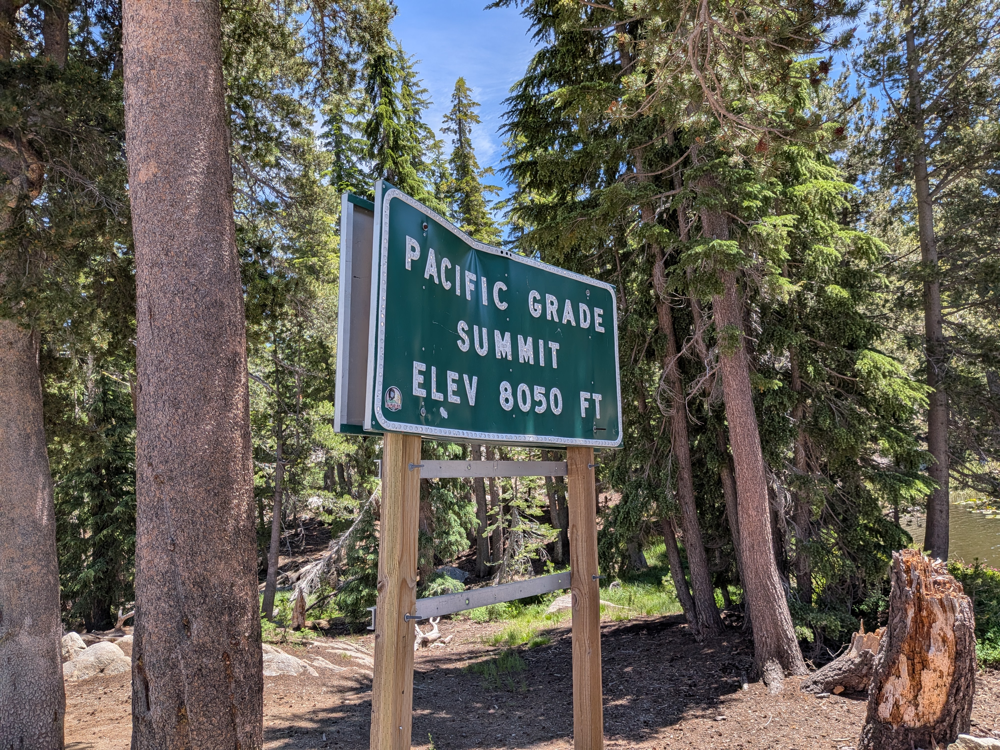
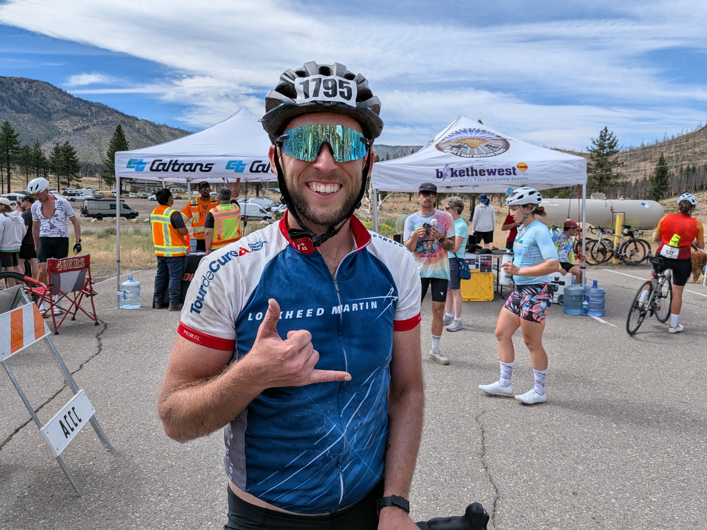
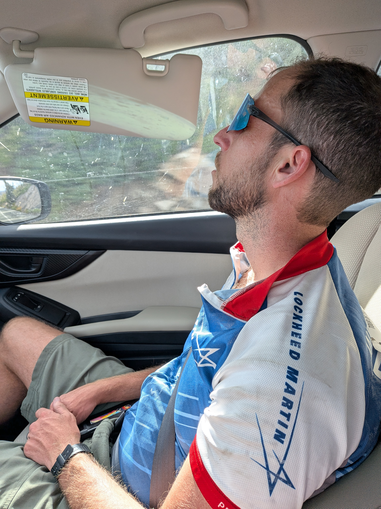

This isn't really a climbing/mountaineering trip, but I thought this was cool enough to deserve a post.
I had heard about Death Ride before and had written it off as basically impossible for me. Over 100 miles and 13,000 feet of elevation gain. I had never managed more than the 8600 feet of gain that I did on my Colchuck and Argonaut link up years ago, and the only century I had ever bike absolutely destroyed me. I had decided that 2026 would be my summer of fitness, and so I signed up with Jacob.
The Death Ride climbs six passes (3 passes from both sides) in the Sierra Nevadas. Pretty much all of the real biking is on closed roads, which is incredible. There's no other way to bike these passes without taking your life into your hands. The support and community are incredible too. There's something about the atmosphere that helps you just keep on going.
I had been doing a lot of general training, but was behind on my biking. True to my style, I also had a last minute work meeting pop up 2 days before that I couldn't skip. Problem was, that meeting was in the UK. At least the time change would be working in my favor coming back. I caught the early flight on Friday morning out of Heathrow, arriving home by late afternoon. I grabbed a shower, pack, and then we loaded the bikes and left. We had a campsite reserved that night about a half hour from the start line. We got in around 10pm in the dark; I set up a quick bivy and caught a few hours of sleep before the 3am alarm.
The Death Ride nominally starts at 5am, but many people will get an early start. It's not a race, so no one is "cheating" by doing so. It just gives you fewer hours of cooking in the July heat. We had missed the afternoon/evening registration the day before, so we needed to pick up our bibs. All told, we were on the road at 4:30.

Monitor Pass is first, going up and over until the junction with Highway 395. We took it very easy, stopping at all of the aid stations on the way. We had lunch at the bottom of Ebbets Pass and then kept moving. I dropped my backpack here; I usually like to bike with a backpack that lets me carry extra supplies and hydration, but I was really into the spirit of the "supported ride" and ditched it. I had an attack of calf cramps partway up Ebbets. All told, I probably drank about a liter of pickle juice throughout the day, trying to stay ahead of the cramping. This side of Ebbets is the largest climb of the day.


Going in, my threshold for a successful day would be to finish three passes. This would effectively be my first 10 kft day by any human-powered means, and I was prepared to be proud of that and call it. But even through I was pretty wrecked from Ebbets, I was not ready to be done yet. I started rolling downhill towards the Pacific Grade. This is the roughest stretch of road; I managed to vibrate one of my water bottles out of its holder. Suddenly, I was really regretting not having my backpack now.
The Pacific grade is unfairly steep. I'll admit, I had to walk a few sections. I think it was probably faster walking anyway. Once I had battled to the top of Pacific Grade, the hard part was over. Continuing down to Lake Alpine only added another 700 feet or so. And once I made it to that end, I would have to finish to get back to the car. This was the moment of commitment.


Ascending Pacific Grade from the west is far easier, but I was really feeling the heat and the length of the day. There was no aid station up there, so I pushed through to the bottom of Ebbets. I got a second wind coming up Ebbets, although I ended up needing to take a couple of breaks on the way. Just for fun, I checked the area where I had lost my water bottle; I saw a flash of white a bit off the road and down the slope, but it was a discarded beer can. However, I did find an entirely different water bottle. It even had some liquid in it! I wasn't that desparate yet, but I was out of water and it was nice to have the option.
The road back to the start is a long downhill, and I ended up pushing here. I regretted it as I started to die on the last 700 foot climb up to and through Markleeville. It was solid Type II fun pain cave, and I pedaled that last steep driveway up to the finish line totally exhausted. A popsicle and a nice cold beer brought be back to life.

